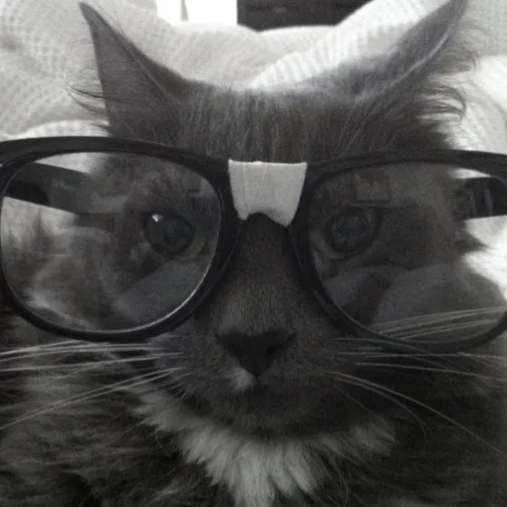

| FOUNDERS & CREATORS DIRECTORY
О создателях.
Объединение oncdev основано двумя разработчиками. Мы создаем экспериментальные инструменты, поддерживаем инфраструктуру и развиваем сообщество.

FOUNDER
Vobi
AKA sup, sunny / meforr
Основатель oncdev. Проектирование веб-сервисов, разработка прикладного ПО, проектирование пользовательского опыта и чистая архитектура.
WEB DEVELOPMENT
APPLIED SOFTWARE
UI & UX CRAFT

FOUNDER
Polimer
AKA PolimerS / PoliSours
Основатель oncdev и автор канала PolimerS. Backend-разработчик, специалист по искусственному интеллекту, прикладной математике и анализу данных.
BACKEND SYSTEMS
AI & MATHEMATICS
YOUTUBE CREATOR